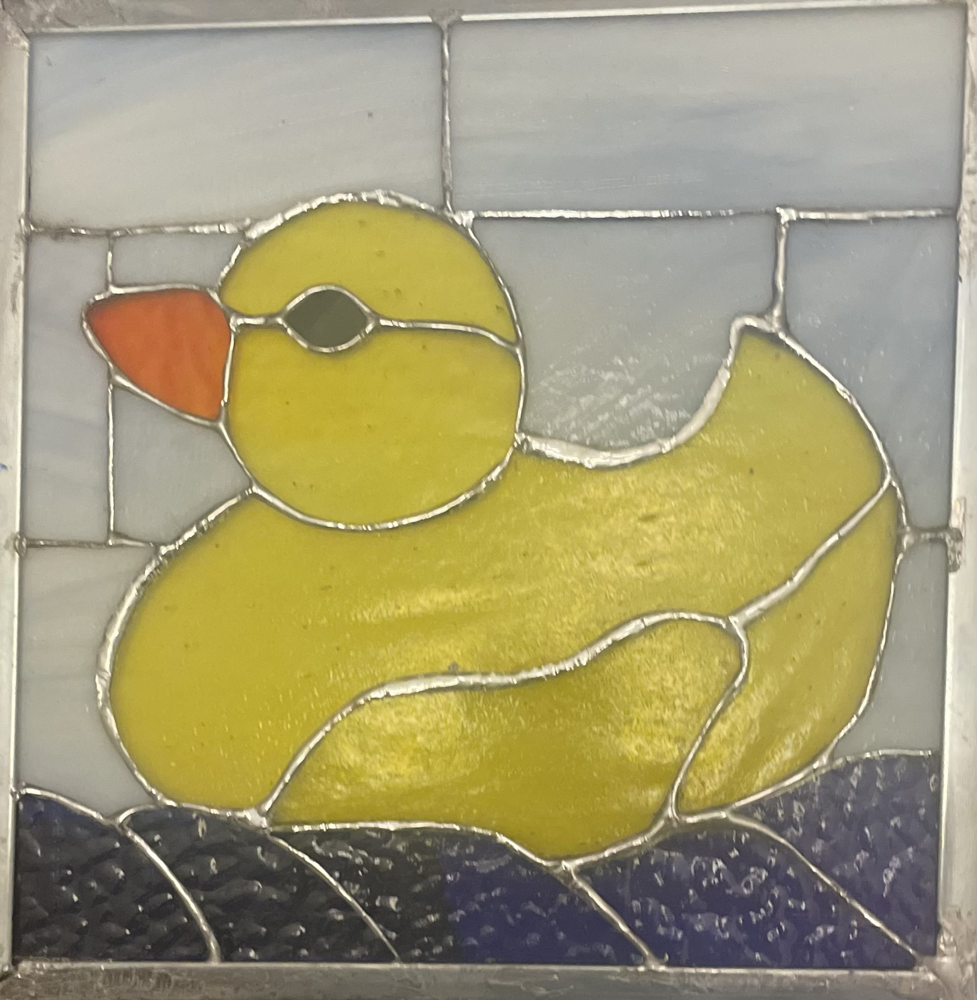

This is Brem's first stained glass piece. It was created to complement the artist's rubber duck collection. The duck sports a bright yellow color and a spritely orange beak. This piece features a light-blue tiled background with an opaque rubber duck in the mid-ground. Not for sale.